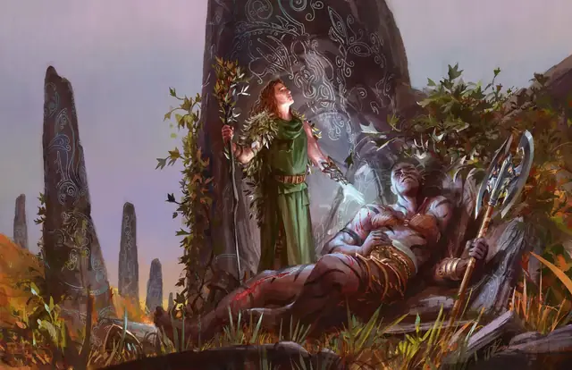

Малое восстановление
Lesser Restoration
2 уровень, Ограждение

Время сотворения Бонусное действие
Дистанция Касание
Компоненты В, С
Длительность Мгновенная
Классы Артефактор, Бард, Друид, Жрец, Паладин, Следопыт
Подклассы Алхимик (Артефактор), Домен жизни (Жрец), Небожитель (Колдун), Заводное чародейство (Чародей), Чародейство чаропламени (Чародей)
Вы касаетесь существа и снимаете с него одно состояние из следующих: Оглушённый, Ослеплённый, Отравленный или Парализованный.